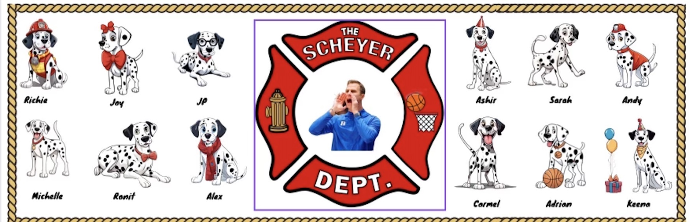
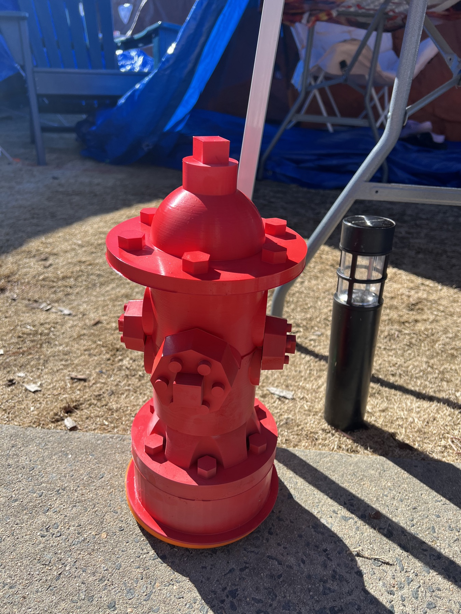
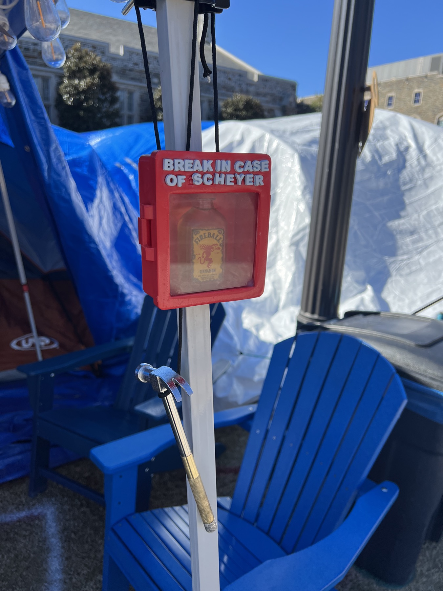
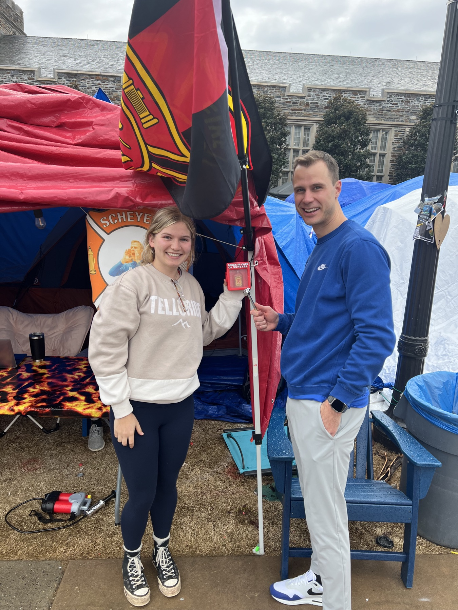
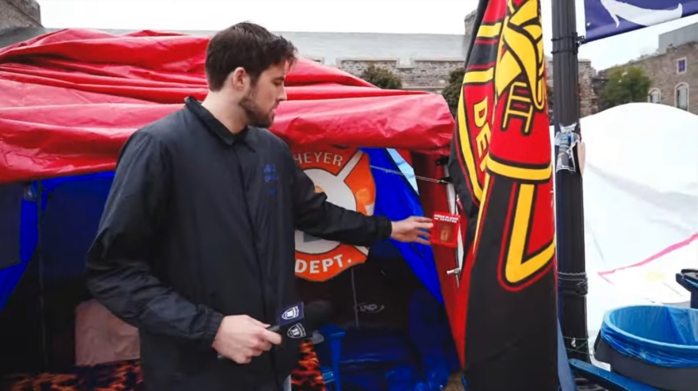
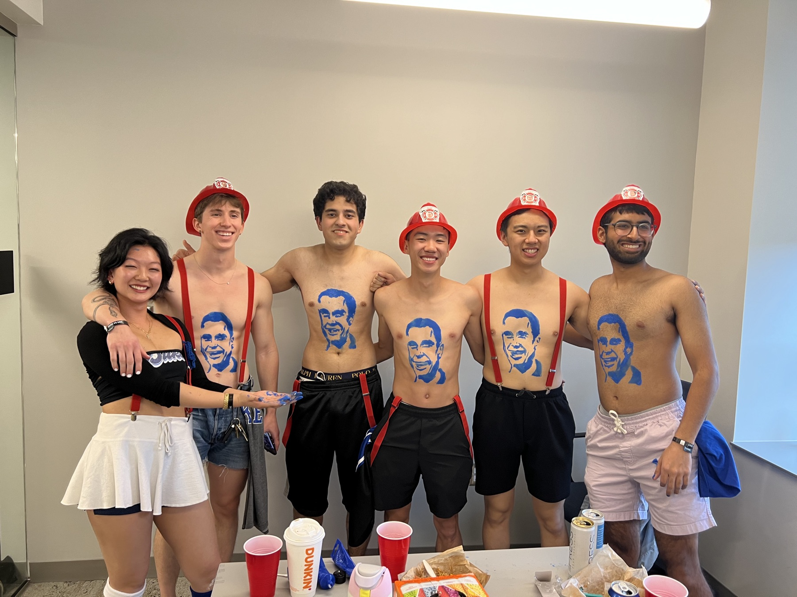
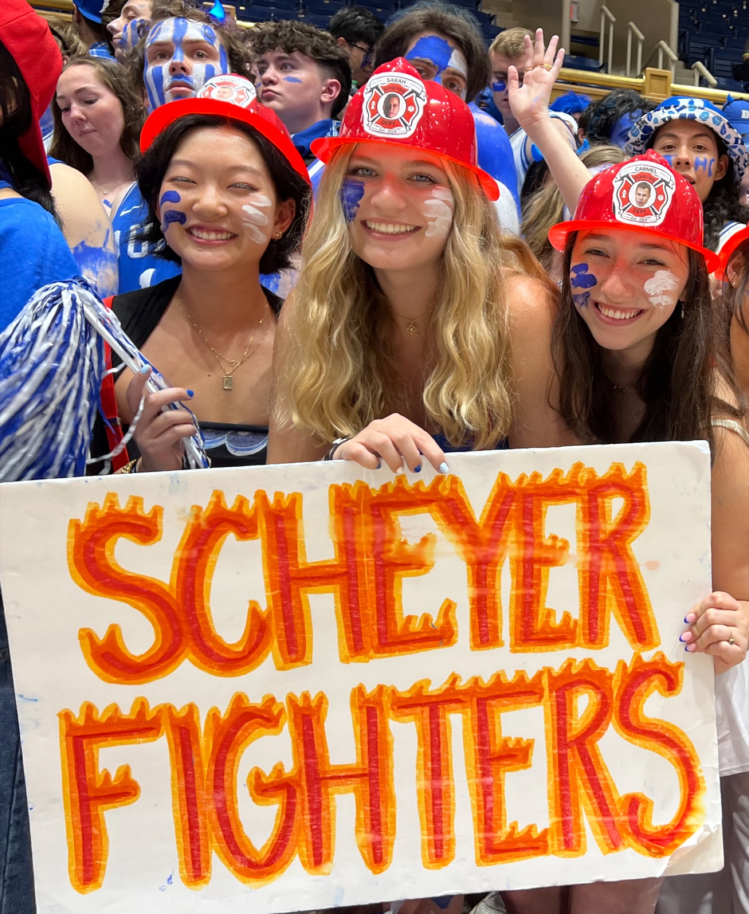

How I Engineered My Way to Earning Front Row Seats at the Duke vs UNC Game
As a Duke student, I was thrilled to dive into the tradition of the Cameron Crazies—known as the most passionate and spirited student section in all of college basketball. Each year, in anticipation of the highly-anticipated Duke vs. UNC game, the Crazies line up for their chance to attend the game a full six weeks in advance. Yes, you read that right—this ritual, known as “tenting,” involves forming a group of 12 students to camp out for weeks leading up to the big event.
Tenting comes with a unique set of rules, such as how many tent members need to be present at any given time and the check-in process when the “line monitors” (affectionately dubbed the tenting police) sound their alarm, which can happen at all hours of the day and often multiple times a night. This system ensures that everyone proves their dedication long before tip-off.
So, how does one secure the best seats in the stadium? Throughout the tenting season, various spirit competitions determine each tent’s standing, with final rankings revealed at the end of the season. Competitions include activities like walkathons, attending other sporting events, decorating tents, and crafting creative tent names. There’s even a multi-page test on Duke basketball history that each tent must complete one week before the game.
Preparing for this test took thoughtful planning and full participation from all tent members. As the designated numbers geek, I focused on memorizing player statistics (PPG, FT%, 3PT%, etc.), while others studied player bios, including names, heights, and hometowns. There’s always a surprise question, like “How much does Theo John charge for a Cameo?” (thankfully, we nailed that one). While our final score wasn’t revealed, we felt confident in our collective performance.

As the leader of my tent, my big goal was to secure front-row seats. After brainstorming potential tent names, we settled on “The Scheyer Department,” a nod to our coach, Jon Scheyer. We became the “Scheyerfighters,” which naturally inspired a firefighter-themed tent.
I got busy preparing a bill of materials (BOM) and budget for our decorations. I pulled together a canopy, LED string lights, and a 900 Wh power bank from my personal camping gear, creating a welcoming space on our patch of grass. In my free time, I even started 3D printing custom decorations and sprucing them up with spray paint.


Our tent quickly became a popular stop for visitors, including Coach Scheyer and several players. We gained attention on social media, appearing in viral TikToks about Duke tenting, and even had Ryan Young introduce our tent on Blue Planet, Duke Basketball’s YouTube series. Our efforts paid off—we placed second in the tent decoration competition!


In the final week of tenting, we participated in a body paint competition. Our idea was to laser cut a stencil of Coach Scheyer’s face and use it to paint our members. While it looked a bit eerie, voters loved our design, and we won first place! Combined with our strong performance on the test and other spirit competitions, we earned the coveted spot as Tent Number 3.

On game day, I continued my creative streak by designing a sign for our group. We used the stencils again to paint Coach’s face on every member, resulting in a photo shoot and a feature story in Duke’s student newspaper, The Chronicle. As we cheered from the front row, we made appearances on ESPN, cheering both for our team and the fact that tenting was finally over.
